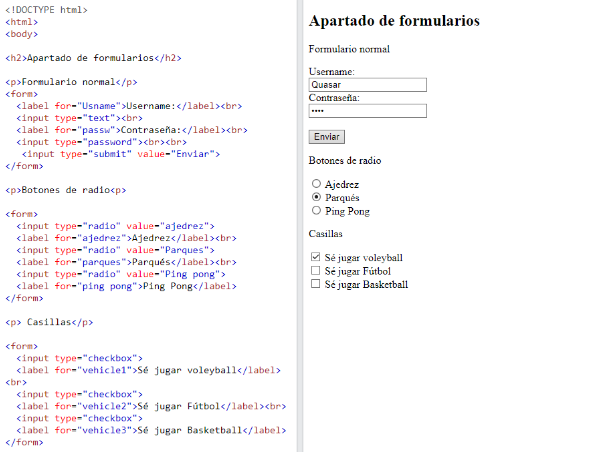

"Se utiliza un formulario HTML para recopilar la entrada del usuario. La entrada del usuario se envía con mayor frecuencia a un servidor para su procesamiento."
El "form" elemento es un contenedor para diferentes tipos de elementos de entrada, como: campos de texto, casillas de verificación, botones de opción,
botones de envío, etc
El elemento HTML "input" es el elemento de formulario más utilizado.
La "label" etiqueta define una etiqueta para muchos elementos de formulario.
El "label" elemento es útil para los usuarios de lectores de pantalla, porque el lector de pantalla leerá en voz alta la etiqueta cuando el usuario se
centre en el elemento de entrada
El "input type="radio" define un botón de opción
El "input type="submit" define un botón para enviar los datos del formulario a un controlador de formulario.
Con la información anterior se han hecho ejercicios con respecto a este apartado, por lo cual se presenta uno:
